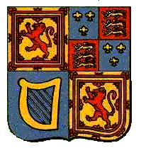

Bonnie Prince Charlie
A collection of songs of the British Isles relating to the Jacobite risings, in particular to Prince Charles Edward Stuart's epic venture
Recueil de chants des Îles Britanniques relatifs aux soulèvements Jacobites, en particulier à l'aventure épique du Prince Charles Edouard Stuart
|
"Although my heart is unco sair
|
"Bien que je sois plein d'amertume,
|
You are listening to
"Came ye by Athol?"
-Slip Jig version (9/8)
Sequenced by Christian Souchon

since 201004